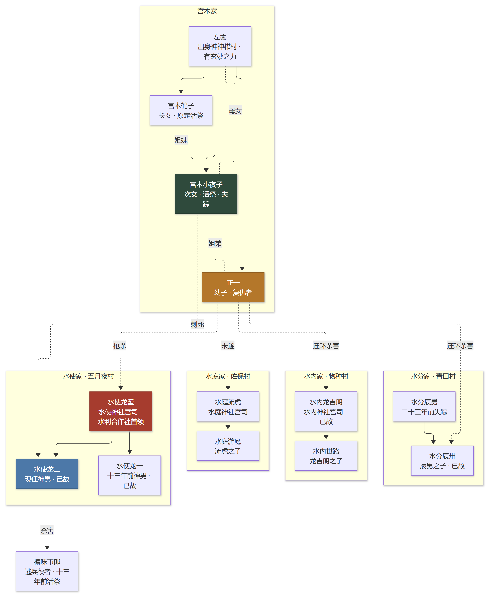
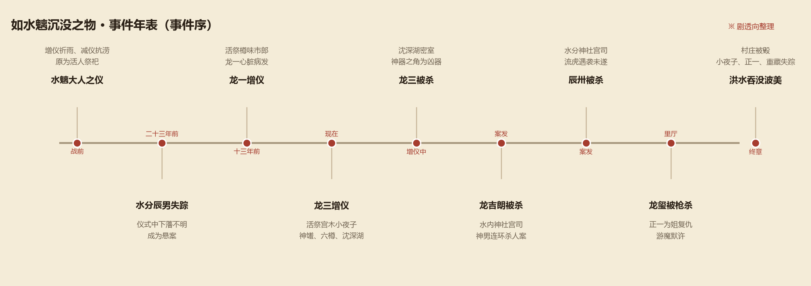

如水魑沉没之物
水魑の如き沈むもの · 三津田信三 · 刀城言耶系列 第六部长篇
奈良深山里的波美之地，四座村子守着一条深通川，也守着一个叫「水魑大人」的古老仪式。 仪式原本要献上什么？为什么装供品的樽，偏偏要准备六只？当神男在沈深湖上被刺死、 宫司们接连倒下，刀城言耶才发现——这一连串命案，从几百年前就埋下了种子。
01作品档案
| 书名 | 如水魑沉没之物（水魑の如き沈むもの） |
|---|---|
| 作者 | 三津田信三（Mitsuda Shinzo） |
| 系列 | 「刀城言耶」系列第六部长篇（时间上紧接《如山魔嗤笑之物》） |
| 主要荣誉 | 2010 年第 10 届本格推理大奖（小说部门）获奖 |
| 中文版 | 千本樱文库（张舟 译，以讲谈社文库本为底本修订） |
| 类型 | 民俗推理 / 本格推理 / 恐怖 / 战后村落群像 |
| 一句话 | 一场为了「让村子活下去」的祭祀，把活人装进樽里沉进湖——真相却比鬼神更冷。 |
这是三津田信三真正走进大众视野的一本书。它把「水魑大人之仪」这个祈雨仪式， 写成了一套严丝合缝的杀人舞台：仪式怎么进行、谁站在哪里、供品怎么摆， 全都成了诡计的一部分。民俗不是背景板，而是凶器本身。
02舞台与传说
波美之地
故事发生在奈良的深山。四面环山、东西狭长的盆地里，从西向东依次是 五月夜村、物种村、佐保村、青田村四座村子； 一条深通川从西往东穿过，是四村的水源，也是洪水的来源。 四村各有一座神社（水使、水内、水庭、水分），共同组成「水利合作社」， 决定「番水」的次序，也轮流主持水魑大人的仪式。
水魑大人
水魑是水之精灵、蛟龙的前身——《仁德纪》里就有「尝有水魑苦民」的记载。 传说它会从沈深湖的湖底浮起，经流升之瀑升天，化身为雨龙降雨。 为此，四村在干旱时举行增仪祈雨，在洪涝时举行减仪抗涝。 其中五月夜村的水使神社「力量最强」，仪式从没失灵过。
一只眼仓
水使家有一座「一只眼仓」，据说关着「水魑大人的新娘」。 被选中的少女要在仓里「缓慢地」成为活祭——当地人说，成为新娘就能与神同在、永远幸福。 至于这是不是真的，书里会给出答案。
「古老」往往与「人道」背道而驰——越原汁原味的仪式，越可能藏着最残忍的东西。 —— 本页按作品主题整理
03登场人物
- 刀城言耶——怪奇小说家，本书的侦探；来波美取材，被卷进案子。
- 阿武隈川乌——言耶的怪奇小说家前辈，自封名侦探，话多但偶尔一针见血。
- 祖父江偲——出版社编辑，跟着言耶跑现场，胆子大、爱吐槽。
- 水使龙玺——水使神社宫司、水利合作社首领，位高权重。
- 水使龙一 / 水使龙三——龙玺的两个儿子，先后担任「神男」。
- 水内龙吉朗 / 水内世路——水内神社宫司与他的儿子。
- 水庭流虎 / 水庭游魔——水庭神社宫司与他的儿子，游魔有潜水装备。
- 水分辰男 / 水分辰卅——水分神社的父子，辰男二十三年前在仪式中失踪。
- 宫木左雾——来自神神栉村的女人，身上有说不清的玄妙力量。
- 宫木鹤子 / 宫木小夜子 / 正一——左雾的三个孩子；鹤子原定做活祭，小夜子顶替了她，正一是最小的弟弟。
- 樽味市郎——逃兵役躲进波美的男人，十三年前的那场增仪改变了一切。
- 重藏——水使家的老人，沉默地看着一切。

04案件年表

故事的时间定位大约是二战结束十年后，但年表要往前拉：二十三年前水分辰男在仪式中失踪， 十三年前水使龙一的增仪出了事，如今轮到了龙三。增仪进行到一半，神男死在沈深湖上； 紧接着，水内、水分两家的宫司接连遇害，水庭宫司遇袭未遂——「神男连环杀人案」爆发。 而当刀城言耶在里厅揭开真相时，龙玺被枪杀，暴雨也终于压了下来。
05真相
⚠ 点开查看剧透：活祭、两代神男之死与复仇者
水魑大人之仪的原型，是活人祭祀。神馔（南瓜、裙带菜、葫芦、白萝卜、芜菁……） 摆出来的是「活祭少女的身体」；「假男」「假女」是活祭的替代品；六只樽里的第一只， 原本用来装供品，后来被用来装活祭。
水使龙玺的“复兴”
水使龙玺为了让仪式「不失败」，恢复了活祭：把少女下药、装进第一只樽，沉入沈深湖。 他养大了鹤子，原打算让她当活祭；鹤子失格后，他把目光转向了小夜子。
龙一之死（十三年前）
那一次，被装进樽的是逃兵役的樽味市郎。樽没沉下去，龙一下湖去推，樽盖开了， 市郎从里面出来——龙一当场心脏病发而死，市郎被卷入地下水道。 神男与活祭，在意外中互为加害者与被害者。
龙三之死（现在）
这一次被装进樽的是小夜子。她没有被活祭——她从樽里脱身，带着偷来的「水魑大人的角」 上了游船，刺死了龙三，随后失踪。沈深湖上的「密室」，因此有了一个令人心碎的解法。
神男连环杀人案
凶手是正一——小夜子的弟弟。他潜入湖中本想救出姐姐，没赶上，于是转向复仇： 连杀水内龙吉朗、水分辰卅，袭击水庭流虎，最后在里厅用枪打死水使龙玺。 水庭游魔看出了他的动机，却选择放他走；重藏也在暗中帮他。 至于龙吉朗、辰卅——他们其实并不知道活祭复兴的事，是被误会而死的。
洪水
真相揭开的同时，暴雨成灾。水魑大人「吞没」了整个波美：田园被冲走、房屋倒塌， 小夜子、正一、重藏下落不明，水内世路独自留下，准备执行减仪。 活下来的人，在五月夜村的旧址上重建了新的村庄。
06诡计解剖
⚠ 点开查看剧透：仪式如何变成凶器
1. 仪式的象征体系
神馔摆的是活祭的身体，樽是装供品的容器，第一只樽被偷偷换成了「活祭之樽」—— 整套仪式的规矩本身就是藏尸与杀人的掩护。读者第一次读只觉得是民俗描写， 回头才发现每一件供品都在提示真相。
2. 沈深湖密室
神男在湖中央的游船上被杀，四周是水，船底有洞穴，湖底连着地下水道。 凶手怎么进出？答案不是「会飞」，而是潜水装备、樽、船底洞穴与「活祭本人」的组合。
3. 替代与身份
「假男」「假女」是活祭的替身；鹤子被小夜子顶替；市郎被当成活祭； 正一以为宫司们都是同谋——层层替代与误认，把每一个人的行动都引向了错误的靶子。
4. 战争与村落
战时日本对乡土信仰的破坏，让仪式在战后只能「表面补全」；而「非国民」的恐惧， 又让人把痛苦咽进肚子里。这本书里的凶手，几乎都是被时代和习俗逼出来的。
5. 水魑大人的“超自然”
与系列其他作品相比，本书的「超自然」含量最重：鬼女、仓里的怪声、水魑的影子…… 三津田没有把它们解释干净，而是让它们和人心里的杀意并列—— 鬼神未必存在，人心里的杀意却真实得可怕。
07伏笔与名场面
这本书的伏笔大多埋在「看起来只是民俗」的地方：四村名字的读音、二重山原本叫什么、 神馔为什么是那些食材、六只樽为什么偏偏是第一只……书末解说特意提到， 作者在很多看似多余的地方加了注释，因为解谜的线索与日语发音有关—— 懂一点日语，读起来会更过瘾。
「为了村子能活下去，头领决心杀人；为了孩子能活下去，母亲借鬼神之力杀人； 为了自己能活下去，孩子决心杀人。」
杀人之后并没有幸福的生活，只有受尽煎熬的人生。 —— 书末解说《村落民俗的杀戮盛宴》大意
08评价与定位
《如水魑沉没之物》于 2010 年获得第 10 届本格推理大奖，是三津田信三真正进入大众视野的作品。 和《如首无作祟之物》相比，它的「超自然」氛围更浓、篇幅更长，但推理的骨架一点没松： 伏线密布、层层反转，最后落到一个让人叹息的结局上。
在本鲸鱼娘看来，它和《首无》《钟表馆》正好构成三种不同的「味」： 首无玩的是叙述者身份，钟表馆玩的是时间，水魑玩的是—— 一整个村子的习俗。当仪式本身成为凶器，你读的就不再是「谁干的」， 而是「这个村子为什么非杀人不可」。
- 适合：民俗推理爱好者、战后日本村落题材、喜欢「推理与恐怖一体」的读者。
- 不适合：不喜欢长篇民俗铺垫、期待快节奏的读者。
- 阅读建议：第一次读别查资料，留意「读音」和「供品」；读完再看本页的真相区。
09参考资料
- 三津田信三《如水魑沉没之物》千本樱文库中文版（张舟 译），小说正文与书末解说。
- 书末解说《村落民俗的杀戮盛宴》（张舟），关于系列奖项、时代背景、仪式与主题的整理。
- 本页为二次创作解说，情节概述与观点以原作与公开资料为准；如与原文有出入，以原作小说为准。